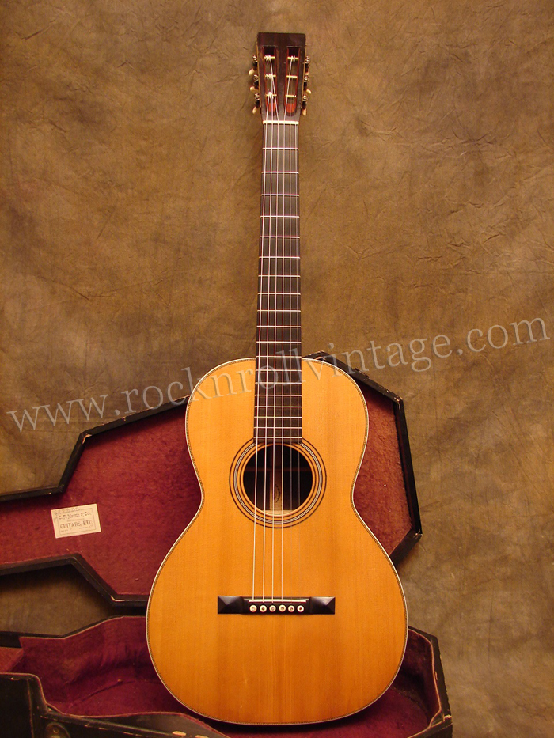

While an antique is defined as an object over 100 years old, there's no strict chronological definition of what makes something vintage. Typically, though, guitars around 30 years old or older fall into that category, and even newer instruments will often be labeled as such by sellers. In the wine world, vintage can refer to anything of a certain quality, and there are some who take the same perspective with guitars. On Reverb, we usually consider anything made prior to 1980 as being vintage. (via reverb.com)
Here are some tricks to tell if your guitar is vintage and valuble: